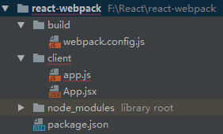
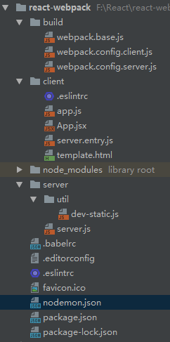

所有内容在前端生成；（后端不需要模块引擎，只需要提供数据）
js承担更多的业务逻辑，后端只提供API；
页面路由跳转不需要经过后端；（浏览器输入地址浏览器是不刷新的，前端动态地去改变内容）
架构工具：npm,bower,jspm(使用http2,面向未来)
模块化工具：webpack，rollup，browserify
内容都由服务端用模板生成；（作为后端模板的语言非常多，java、.net、php、Python、nodejs 都可以，不管用哪种语言，他们后端模板引擎的概念基本上是差不多的）
每次页面跳转都要经过服务端；（每次页面跳转都要刷新一下，会有一定的用户等待时间，相对来 说体验没有单页应用好）
多页应用中，js更多只是做做动画。
模块化工具：sea.js/require.js/无
首先，新建一个叫react-webpack的项目文件夹。然后在项目文件夹下打开命令行窗口，输入 npm init给项目初始化。然后安装webpack:
npm i webpack --save
webpack不仅仅是js的打包器，我们前端应用中用到的所有资源都可以用webpack打包。webpack打包的核心是loader机制。通过loader去处理指定的某种类型的资源。这些loader处理了这些资源文件之 后，它会将这些资源文件，比如说eS6写的js，处理成eS5的能在浏览器中运行的代码，最终经过webpack处理生成一个完整的js文件，在浏览器中可以完整的使用。
//安装react
npm i react --save
npm i react-dom --save
react-dom是用来把react的组件渲染到DOM里面的。
增加文件夹和文件构建项目结构如下：
在webpack.config.js中配置：
const path = require('path'); //用path完成绝对路径的书写，避免一些因系统差异和其他原因引起的错误
module.exports = {
entry:{
app:path.join(__dirname,'../client/app.js') //指定页面入口文件
},
output:{
filename:'[name].[hash].js',
path:path.join(__dirname,'../dist'),
publicPath:'/public' //静态资源引用时的路径,加在HTML文件script便签js资源路径前面，如/public/app.hash.js。帮助区分url是静态资源还是什么
},
module:{ //配置让webpack可以识别jsx文件
rules:[
{
test:/.jsx$/,//说明哪种类型的文件需要特定的loader去加载它
loader:'babel-loader'
}
]
}
};
为了让webpack能够识别react代码，也就是jsx文件，我们在webpack.config.js中有配置了babel-loader去处理。安装babel：
npm i babel-loader -D //babel-loader只是webpack的一个插件,还需要一个babel-core作为babel的核心代码
npm i babel-core -D
babel也需要配置，因为它默认是编译es6的代码。在根目录新建一个babel的配置文件.babelrc，编写文件让它支持jsx:
// .babelrc
{
"presets": [ //presets代表babel支持的语法.babel-core里默认没有包含指定现在编写的代码是哪个语言版本的
["es2015",{"loose":true}], //比较松散的而非严格的
"react" //加上react之后才代表babel可以去编译react代码
]
}
在babel里配置后，需要安装一些特定的包，有一定规范：
npm i babel-preset-es2015 babel-preset-es2015-loose babel-preset-react -D
如上安装好后，babel才能够支持我们jsx的语法。
为了看一下基础配置完成后的打包效果，我们在package.json中scripts写一个命令：
// package.json
{ ...
"scripts": {
"test": "echo \"Error: no test specified\" && exit 1",
"build": "webpack --config build/webpack.config.js" //指定webpack的config文件
},
...
}
若执行npm run build，会在根目录下生成一个dist文件夹。
为了在浏览器中打开我们的文件，需要安装一个html-webpack-plugin :
npm i html-webpack-plugin -D
在webpack配置文件中添加配置：
const HTMLPlugin = require('html-webpack-plugin'); //新增引入
module.exports = {
......
module:{
......
},
plugins:[
new HTMLPlugin() //生成HTML页面，同时在webpack编译的时候，把所有的entry注入到HTML中，而且名称路径也是根据output中的配置。
]
};
编写app.js :
//应用入口文件，把应用mount到HTML里面
import React from 'react' //必须要引入的
import ReactDOM from 'react-dom'
import App from './App.jsx'
ReactDOM.render(<App/>,document.body);
因为在app.js中有用到jsx的方式，所以它会出现语言的问题，且webpack在编译js时并没有用到babel-loader。js此项目中用es6的语法，还是需要经过babel-loader编译，所以需要配置下：
// webpack.config.js
...
module:{
rules:[
{
test:/.jsx$/,//说明哪种类型的文件需要特定的loader去加载它
loader:'babel-loader'
},
{
test:/.js$/,
loader:'babel-loader',
exclude:[
path.join(__dirname,'../node_modules') //排除掉node_modules中的js文件
]
}
]
},
...
然后在App.jsx中增加一个组件：
// App.jsx ,声明应用页面内容
import React from 'react'
export default class App extends React.Component {
render(){
return (
<div>this is app ~</div>
)
}
}
现在，我们通过webpack启动页面。启动前，我们把webpack.config.js中publicPath暂时设置为空，因为webpack也只是在dist目录下简单地启了一个web server,并没有做路径映射。然后 npm run build,打开dist目录下的index.html文件。结果浏览器页面显示出了'this is app ~'文字。
在现代的webapp开发模式下，我们用的很多前端框架做的单页应用，都是在浏览器端去渲染出HTML内容。这样会存在一些问题：
☞ SEO不友好。因为百度、Google搜索引擎去抓取网页内容时是不会去执行js代码的，所以根据网页的url加载过来的这时是一个空白的HTML，会认为我们的网站是没有任何东西的。
☞ 首次请求等待时间较长。因为要等js加载完后才会呈现内容，等待js加载的时间就会比较长，体验不好。
react构建的webapp，能够在node.js环境下进行一个渲染过程，得到一些HTML的内容，以此可以直接返回给浏览器端已经可以呈现的HTML内容，这样一方面网页可以被爬虫抓取，另一方面可以让用户等待时间变短。
react-dom是React专为web端开发的渲染工具。我们可以在客户端使用react-dom的render方法渲染组件，而在服务端，react-dom/server提供我们将react组件渲染成HTML的方法。
服务端没有document和window这些对象，所以我们在client文件夹下新建一个server.entry.js文件。这个文件用来把我们需要服务端渲染的内容export出去。
//server.entry.js
import React from 'react'
import App from './App.jsx'
export default <App/>
在服务端渲染的时候需要使用这个文件，需要单独打包它。这个代码不能直接在服务端执行的，因为它是jsx代码，不能直接在node.js环境去import这jsx代码，所以需要打包过。打包的过程需要新建一个webpack配置文件，在build文件夹下创建webpack.config.server.js :
//webpack.config.server.js
const path = require('path');
module.exports = {
target:'node', //指明这个js打包出来的内容是使用在哪个执行环境中的,可以是web、node或其他
entry:{
app:path.join(__dirname,'../client/server.entry.js')
},
output:{
filename:'server.entry.js',
path:path.join(__dirname,'../dist'),
publicPath:'' ,
libraryTarget:'commonjs2' //打包出来的js使用的模块方案，比方umd,cmd,commonjs等
},
module:{ //配置让webpack可以识别jsx文件
rules:[
{
test:/.jsx$/,
loader:'babel-loader'
},
{
test:/.js$/,
loader:'babel-loader',
exclude:[
path.join(__dirname,'../node_modules')
]
}
]
}
};
配置完后我们需要把这部分js打包出来。因为打包时也需要用到client的代码，为了方便起见，把原先的webpack.config.js更名为webpack.config.client.js,并在package.json中scripts作修改：
//package.json
{ ...
"scripts": {
"test": "echo \"Error: no test specified\" && exit 1",
"build:client":"webpack --config build/webpack.config.client.js",
"build:server":"webpack --config build/webpack.config.server.js",
"clear":"rimraf dist",
"build": "npm run clear && npm run build:client && npm run build:server"
},
...
}
目前情况下，每次build构建，在dist目录下都会生成新的文件，但实际中是希望能够把dist目录覆盖掉。为此，package.json中增加了一个‘clear’命令,删除dist目录。‘rimraf’是node.js的一个很小的包，是专门用来删除文件夹的。这个包需要安装一下：
npm i rimraf -D
然后npm run build打包，完成后在dist文件夹下多了一个server.entry.js文件。
打包完成后，我们就可以在服务端渲染中使用这个模块。在根目录下新建一个server文件夹，在文件夹里新建server.js文件。写服务我们用的是express，先安装一下：
npm i express -S
安装express完成后，在server.js中写服务：
const express = require('express');
const ReactSSR = require('react-dom/server');
const serverEntry = require('../dist/server.entry').default;//服务端代码在server.entry.js中
const app = express();
app.get('*',function (req,res) {
const appString = ReactSSR.render(serverEntry);//服务端渲染得到的内容
res.send(appString);
});
app.listen(3333,function () {
console.log('server is listening on 3333...')
});
在package.json的scripts中添加启动命令:
"start": "node server/server.js"
然后可以npm start启动服务。此时在浏览器中输入localhost:3333,页面输出‘this is app ~’。检查网页network下localhost的response,内容为‘<div>this is app ~</div>’。
实际项目中，我们需要把服务端渲染出来的内容插入到index.html中的body里面，再把整个index.html返回到浏览器端。至此，我们需要在client目录下新建一个template.html：
//template.html
/*其余内容都是输入‘！+tab’默认生产的*/
...
<body>
<div id="root"><app></app></div>
</body>
...
在root下加一个app标签，如果浏览器默认加载这个HTML也不会显示任何内容。这部分内容是需要在服务器渲染的时候替换掉的，且在客户端渲染的时候也需要把它替换掉。接着修改app.js:
ReactDOM.render(<App/>,document.getElementById('root'));
如何在webpack中去使用template.html呢？我们在webpack.config.client.js中继续配置：
plugins:[
new HTMLPlugin({
template:path.join(__dirname,'../client/template.html') //这样配置后，最终在dist目录下生成的index.html会以template.html作为模板，里面的内容都不变，然后插入我们生成的js。
}) //生成HTML页面，同时在webpack编译的时候，把所有的entry注入到HTML中，而且名称路径也是根据output中的配置。
]
然后在server端需要这么做：
//server.js
const fs = require('fs');
const path = require('path'); //在引用某一个文件路径时最好都用path去解析一下，用绝对路径去做，这样不会存在任何问题。
const template = fs.readFileSync(path.join(__dirname,'../dist/index.html'),'utf8'); //注意要用utf8格式才会变为string，不然是nodejs的buffer
...
app.use('/public',express.static(path.join(__dirname,'../dist'))); //给静态文件制定请求返回。express有提供一个模块帮我们去处理这个内容。
app.get('*',function (req,res) {
const appString = ReactSSR.renderToString(serverEntry);//服务端渲染得到的内容
res.send(template.replace('<app></app>',appString));
});
...
在webpack.config.client.js和webpack.config.server.js中把output的publicPath设置回‘/public’。如果请求的资源没有用‘/public’这样的设置而是直接一个路径，就没办法在服务端很好的区分，哪些路径我们要返回静态内容，哪些又是要返回服务端渲染的代码。所以这样设置后，‘/public’开头的内容全部返回静态文件，映射到目录文件夹就可以了。
然后npm run build后，npm start启动服务并刷新页面。
在react16里面新增了一个ReactDOM.hydrate()方法，如果使用了服务端渲染，需要用这个新方法代替ReactDOM.render()在客户端的js里渲染客户端的内容。 react会对比客户端和服务端代码的差别，如果有差别它认为服务端代码是有一定问题的，它会用客户端新代码去代替服务端代码。
webpack dev server是webpack官方提供的插件，能够通过webpack的配置去启动一个服务器，服务于webpack配置中提到的css、js和自动生成的HTML等，能很方便去访问到，并且在编译过程是存在于内存中，每次文件变化都会自动执行编译。能在浏览器中很快看到效果。
hot module replacement修改任何代码，能在页面上无刷新的看到编辑之后的效果。它能保持当前状态，进入到编辑修改之后的状态，并马上看到效果。不需要重新开始获取状态和数据，提高了效率。
在webpack.config.client.js下增加一些配置。首选需要判断当前环境是否是开发环境：
//webpack.config.client.js
...
const isDev = process.env.NODE_ENV === 'development'; //启动命令时手动输入的.可以让webpack适用于不同的环境
const config = {
entry:{
...
},
...
};
if(isDev){ //devServer是webpack里面开发环境的一些常用配置
//因为是在本地开发，最简单是绑定0.0.0.0 ，代表我们可以任何方式进行访问，比方可以用124.0.0.1进行访问。这是指向本机ip的方式。第二种可以使用localhost，也是一样的意思。第三种可以用本机的ip。如果写的是localhost或124.0.0.1，就不能用本机的ip进行访问，存在的问题是如果在局域网内进行开发，别人想连你的电脑进行调试会连不了。
config.devServer = {
host:'0.0.0.0',
port:'8888',
contentBase:path.join(__dirname,'../dist'), //devServer服务于经过webpack编译出来的静态文件的，所以contentBase就是output中的path
hot:true, //启动hot module replacement。之前的webpack1.x配置起来是比价麻烦的。
overlay:{
errors:true //只显示错误信息，像warning这些就不用提示了
}//在webpack编译过程出现任何错误，让它在网页上面显示出一层黑色背景的错误信息。
}
}
module.exports = config;
...
安装webpack-dev-server:
npm i webpack-dev-server -D
安装完后在package.json中写一个命令:
"dev:client":"cross-env NODE_ENV=development webpack-dev-server --config build/webpack.config.client.js",
cross-env是一个需要安装的包。在mac，linux等不同系统在设置环境变量时是有区别的，这个包就是来做这方面事情的。
npm i cross-env -D
webpack.config.client.js里devServer的contentBase意思是，我们在dist目录下启动了webpack-dev-server服务,这个服务server的整个环境是在dist目录下。所以dist目录下文件的访问路径应该是localhost:8888/filename，可以访问到里面的文件。但是dist下静态文件实际路径是前面带有‘public/’的，所以在devServer里还需加上一些配置来解决这个问题：
config.devServer = {
...
publicPath:'/public', //webpack-dev-server的publicPath,这样就跟webpack的publicPath的配置对应起来。意思是，访问所有dist下的静态路径都要通过前面加‘/public’才能访问到。
historyApiFallback:{ //historyApiFallback很有用，它配置了很多的对应的关系
index:'/public/index.html' //可以让所有404的请求都返回这个HTML
}
}
webpack-dev-server会去检测硬盘上面有没有dist这个目录，如果有会直接去访问。所以在启动客户端代码流程npm run dev:client前，把已经存在的dist目录删除。服务启动(启动前把hot:true暂时注释掉,等配置完hot module replacement再恢复)，编译完成后，使用localhost:8888访问页面。
ps:页面此时会有一个warning，我们把template.html下<app>标签用<!--app-->代替，同时修改server.js中replace的内容。
// template.html
<div id="root"><!-- app --></div>
在.babelrc加一个配置：
"plugins": ["react-hot-loader/babel"] //react-hot-loader就是提供react的hot-module-replacement功能的工具
安装react-hot-loader:
npm i react-hot-loader@next -D //它是最新的3.x版本，是测试版，还没作为主包发布到npm,所以用@next版本号安装
修改app.js :
...
ReactDOM.hydrate(<App/>,document.getElementById('root'));
if(module.hot){
module.hot.accept('./App.jsx',() => { //当需要热更新的代码出现的时候，把app重新加载一边
const NextApp = require('./App.jsx').default;
ReactDOM.hydrate(<NextApp/>,document.getElementById('root'));
})
}
hot-module-replacement需要webpack的一个插件来进行使用的。在webpack.config.client.js中添加配置:
...
const webpack = require('webpack');
...
if(isDev){
...
config.plugins.push(new webpack.HotModuleReplacementPlugin())
}
在开发的时候需要给我们的webpack.config.client.js的entry增加一些东西：
...
if(isDev){
config.entry = { //webpack的entry可以是一个数组，数组代表我们这一个entry里面包含的很多的引用的文件，全部打包到一个文件里面去。
app:[
'react-hot-loader/patch', //客户端代码热更新需要用到的内容
path.join(__dirname,'../client/app.js')
]
};
...
}
还要注意在app.js中得引用一个东西AppContainer,我们需要用AppContainer去包裹根节点需要渲染的实际的html内容：
//app.js
...
import { AppContainer } from 'react-hot-loader'
const root = document.getElementById('root');
const render = Component => {
ReactDOM.hydrate(
<AppContainer> <Component/> </AppContainer>,
root
);
};
render(App);
if(module.hot){
module.hot.accept('./App.jsx',() => { //当需要热更新的代码出现的时候，把app重新加载一边
const NextApp = require('./App.jsx').default;
render(NextApp);
})
}
完成后，启动服务npm run dev:client，看一下效果。
还有一个重要的点要注意：在webpack.config.client.js中publicPath的内容之前一直是‘/public’。在某些版本的hot-module-replacement功能会失效，需要把publicPath写成‘/public/’。
服务端渲染会涉及到客户端的js及服务端的bundles,所以服务端不可能像之前写的那样，因为并没有在dist目录下已经生成好对应的文件了。我们需要用其他方法去获取template.html及server bundle这些内容。所以我们需要修改服务端代码,同样需要判断一下前后端环境。如果是开发环境，因为相应的文件比较多，我们在server目录下先新建一个目录util,再在util目录下新建一个文件dev-static.js :
//server.js
const express = require('express');
const ReactSSR = require('react-dom/server');
const fs = require('fs');
const path = require('path'); //在引用某一个文件路径时最好都用path去解析一下，用绝对路径去做，这样不会存在任何问题。
const isDev = process.env.NODE_ENV === 'development';
const app = express();
if(!isDev){
const serverEntry = require('../dist/server.entry').default;//服务端代码在server.entry.js中
const template = fs.readFileSync(path.join(__dirname,'../dist/index.html'),'utf8'); //注意要用utf8格式才会变为string，不然是nodejs的buffer
app.use('/public',express.static(path.join(__dirname,'../dist'))); //给静态文件制定请求返回。express有提供一个模块帮我们去处理这个内容。
app.get('*',function (req,res) {
const appString = ReactSSR.renderToString(serverEntry);//服务端渲染得到的内容
res.send(template.replace('',appString));
});
}else {
const devStatic = require('./util/dev-static');
devStatic(app);
}
app.listen(3333,function () {
console.log('server is listening on 3333...')
}); //dev-static.js
//之前客户端webpack启动的时候，我们能获取到template（会生成dist目录生成index.html）。
//webpack-dev-server启动的时候，也就是开发的时候，template是不写到硬盘上面的，没办法读取到文件。这里我们使用以下方法：
const path = require('path');
const axios = require('axios');//以http请求的方式去webpack-dev-server启动的服务里面去读取这个template
//server端的bundle获取，是通过webpack.config.server.js配置文件去启动webpack后才能拿到bundle，修改任何client下面的文件都会去实时更新bundle的内容。
//在此服务里启动webpack，通过读取webpack打包的结果来获取内容。
const webpack = require('webpack');
const serverConfig = require('../../build/webpack.config.server');
const MemoryFs = require('memory-fs'); //我们不希望serverCompiler把文件输出，因为写到硬盘的过程是比价费时间的，而且降低工作效率。需要安装一个工具memory-fs
const ReactDomServer = require('react-dom/server');
const proxy = require('http-proxy-middleware');
const getTemplate = () => { //通过webpack-dev-server实时地拿到最新的template文件
return new Promise((resolve,reject) => {
axios.get('http://localhost:8888/public/index.html') //webpack-dev-server启动的是本地的服务，它的url是比较固定的
.then(res =>{
resolve(res.data);
})
.catch(reject);
})
};
const Module = module.constructor; //通过module构造方法创造一个新的module
const mfs = new MemoryFs; //memory-fs的API跟nodejs的fs是一样的
const serverCompiler = webpack(serverConfig);//通过webpack和它的配置启动一个webpack的compiler,这compiler会去监听entry下面依赖的文件是否有变化，一旦有变会去重新打包。
serverCompiler.outputFileSystem = mfs; //这是webpack提供的一个配置项。指定是mfs之后，以前用fs去读写的文件现通过mfs去读写，速度变得非常快，因为内存的读写比硬盘的读写快非常多.
let serverBundle;
serverCompiler.watch({},(err,stats) => { //{}里是配置文件
if(err) throw err;
stats = stats.toJson(); //stats是webpack在打包过程中输出的一些信息
stats.errors.forEach(err => console.error(err));
stats.warnings.forEach(warn => console.warn(warn));
//读取server bundle的信息：
const bundlePath = path.join(
serverConfig.output.path,
serverConfig.output.filename
);//服务端bundle的整个路径
const bundle = mfs.readFileSync(bundlePath,'utf-8'); //通过mfs读取文件。bundle是一个string的内容，并非在js中可使用的模块内容.
//用一个比较hack的方式来使bundle变为js可用的模块内容
const m = new Module;
m._compile(bundle,'server-entry.js'); //用Module去解析string的内容，它会生成一个新的模块。把新模块放到外部全局变量serverBundle里 //使用这个方法时一定要去指定module的名字，这里叫它server-entry.js。因为我们require的时候是通过文件名的，如果动态编译一个模块，同样要给它指定一个文件名，否则无法在缓存中存储这部分内容
serverBundle = m.exports.default; //因为是在watch里执行的，所以每次bundle有更新serverBundle都会更新 //m模块是通过exports来挂载我们想要从模块里扔出来的东西的。所以通过.exports.default去获取整个serverBundle。
});
module.exports = function (app) {
app.use('/public',proxy({
target:'http://localhost:8888'
})); //通过代理的方式把静态文件全部代理到webpack devServer启动的这个服务上面。这样只要是‘/public’开头的所有请求都代理到webpack devServer启动的服务上面。
app.get('*',function (req,res) {
//返回服务端渲染完成的结果给浏览器端
getTemplate().then(template => {
const content = ReactDomServer.renderToString(serverBundle);
res.send(template.replace('<!--app-->',content));
})
});
};
安装http请求工具axios,它在浏览器端和node端都可以使用：
npm i axios -S
安装memory-fs。memory-fs在内存里面去读取文件，node里面有个fs模块就是在硬盘上面读取文件，memory-fs实现了fs模块上的一些API，它不写到硬盘上只写到内存里面。
npm i memory-fs -D
在之前尝试中（非开发环境），我们使用了express的静态文件处理工具，而在这里并没有静态文件夹生成，都是在内存中。这里就需要使用一个工具http-proxy-middleware,这是个express的中间件，用来做代理。我们客户端的js都是在webpack devServer里面去存储，它通过一个http服务给export出来。这里我们通过代理的方式把静态文件全部代理到webpack devServer启动的这个服务上面。安装：
npm i http-proxy-middleware -D
然后可以启动查看效果。启动时需要指定环境变量，先去package.json修改：
...
"scripts": {
...
- "start": "node server/server.js"
+ "dev:server": "cross-env NODE_ENV=development node server/server.js"
}
...
首先启动npm run dev:client ，再启动npm run dev:server 。然后在浏览器输入localhost:3333进行访问。
----比较hack的内容，只适用于开发的阶段，不是很正统的使用方法
1,serverCompiler之所以可以这么使用，因为webpack本身提供一个nodejs里面作为一个模块调用的方式，而不仅仅作为一个命令行工具去启动一个打包服务。
2，编译出的内容是字符串，为因webpack输出的内容是字符串，它不会输出在代码里面可以直接使用的模块。如果变为可使用的模块，我们用new Module，然后去_compile输出的字符串。
eslint是随着ECMAScript版本一直更新的js lint工具，插件丰富，并且能够套用规范，规则丰富，能够满足大部分团队需求。
eslint配合git，可以在git commit代码的时候，使用git hook调用eslint进行代码规范验证，不规范的代码无法提交到仓库。
editorconfig是一个多编辑器的插件。由于不同编辑器对文本的格式会有一定区别，它们默认的规则不同。但不同编辑器可以使用同一套editorconfig的规则，只要在编辑器安装一个插件，就可以使用这套规则去规范代码。
安装eslint:
npm i eslint -D
在根目录下新建一个.eslintrc文件，它是一个json文件：
// .eslintrc
{
"extends": "standard"
}
// 整个项目的eslint规则让其extend自standard（标准js规则），它的规则相对没那么多跟复杂，且能够适用于server端和client端代码。
因为我们主要项目是前端工程，我们在client目录下重新再建一个.eslintrc文件，让其去规范客户端代码。客户端代码是用jsx去写的，它的很多规则跟node端不一样。所以在这里用更严格的规则来规范客户端代码：
// client/.eslintrc
{
"parser": "babel-eslint", //parser指定某种工具解析js代码，默认的eslint有一个解析器。一般会使用babel-eslint，因为代码也要通过babel编译。
"env": {
"browser": true,
"es6": true,
"node": true //因为我们是用webpack去编译，有时候会使用到一些在nodejs里会有的环境变量，但在浏览器端是没有的，这是webpack定义好的。
},
"parserOptions": {
"ecmaVersion":6,
"sourceType": "module"
},
"extends": "airbnb",
"rules": {
"semi": [0],
"react/jsx-filename-extension":[0] //对于没有必要的规则，可以在rules里去掉
}
}
// airbnb是美国Airbnb公司制定的react规则
使用了eslint后，希望在代码每次编译前都去检查，我们在webpack.config.client.js和webpack.config.server.js中module的rules加一条：
...
module:{
rules:[
{
enforce: "pre", //在执行真正的代码编译之前，对于符合‘test’的文件执行eslint-loader，一但eslint报错，下面的编译过程就不进行了。
test:/.(js|jsx)$/,
loader: 'eslint-loader',
exclude:[
path.resolve(__dirname,'../node_modules')
]
},
...
]
}
...
安装用到的工具(airbnb里面有非常多依赖的工具的，像eslint-plugin-jsx-ally，eslint-plugin-import等)：
npm i babel-eslint eslint-config-airbnb eslint-config-standard eslint-loader eslint-plugin-import eslint-plugin-jsx-ally eslint-plugin-node eslint-plugin-promise eslint-plugin-react eslint-plugin-standard -D
安装完成后，启动webpack，看eslint有没有生效:npm run dev:client 。
运行命令后会发现有很多报错，如：‘1:11 error Expected linebreaks to be 'LF' but found 'CRLF' ’。这条报错是因为windows系统保存文件时行末默认是‘CRLF’结尾方式，linux和mac是‘LF’。要排除掉这个差异，就需要用到editorconfig 。
在项目根目录下新建一个.editorconfig文件：
// .editorconfig
root = true //代表这是项目的根目录
[*] //所有文件都应用同样的规则
charset = utf-8
indent_style = space
indent_size = 2
end_of_line = lf
insert_final_newline = true
trim_trailing_whitespace = true
editorconfig的配置需要安装一个插件。在webstorm里默认已经集成这个插件。如果是用其他编辑器如sublime，可以去它们安装应用的地方找，安装完后把配置文件放到项目根目录下，这个编辑器就会生效。
然后重新启动npm run dev:client,根据错误提示信息逐条修改代码。
ps: 对于没有必要的规则，可以使用eslint的帮助注释‘//eslint-disable-line’去掉。
首选让项目变成一个git的项目，命令行执行git init就可以了。然后让git commit去执行，我们需要安装一个好用的工具husky :
npm i husky -D
安装完后，在package.json的scripts下增加脚本：
+ "lint":"eslint --ext .js --ext .jsx client/", //检测代码
+ "precommit":"npm run lint" //是一个git的钩子，写在这里，husky会在调用git commit时先执行这个命令。如果这个命令执行成功，才会去执行真正的git commit。
我们项目中webpack.config.client.js和webpack.config.server.js的module部分内容是一样的，可以把这部分公用的提取出去。在build下新建一个叫webpack.base.js文件，用来放这些公用的东西：
// webpack.base.js
const path = require('path');
module.exports = {
output: {
path:path.join(__dirname,'../dist'),
publicPath:'/public/' //静态资源引用时的路径,加在HTML文件script便签js资源路径前面，如/public/app.hash.js。帮助区分url是静态资源还是什么
},
module:{ //配置让webpack可以识别jsx文件
rules:[
{
enforce: "pre",
test:/.(js|jsx)$/,
loader: 'eslint-loader',
exclude:[
path.resolve(__dirname,'../node_modules')
]
},
{
test:/.jsx$/,//说明哪种类型的文件需要特定的loader去加载它
loader:'babel-loader'
},
{
test:/.js$/,
loader:'babel-loader',
exclude:[
path.join(__dirname,'../node_modules')
]
}
]
}
};
安装一个webpack官方提供的专门用来合并webpack配置的工具包：
npm i webpack-merge -D
在webpack.config.client.js中修改：
...
const webpackMerge = require('webpack-merge');
const baseConfig = require('./webpack.base');
const config =webpackMerge(baseConfig,{ //第二个参数内容会去覆盖或插入到baseConfig的内容中
entry:{
...
},
output:{
filename:'[name].[hash].js'
},
plugins:[
...
]
});
...
在webpack.config.server.js中修改：
...
const webpackMerge = require('webpack-merge');
const baseConfig = require('./webpack.base');
module.exports = webpackMerge(baseConfig,{
target:'node',
entry:{
...
},
output:{
filename:'server.entry.js',
libraryTarget:'commonjs2' //打包出来的js使用的模块方案，比方umd,cmd,commonjs等
}
});
然后可以启动npm run dev:client后在页面打开localhost:8888或再npm run dev:server后打开localhost:3333进行检测。
在用localhost:3333进行访问时有一个小问题：network请求资源中，favicon.ico小图标请求返回的是HTML代码。因为我们没在服务端指定这个图标在哪里，没有去处理这个请求，所以服务端直接以为是一个HTML请求。解决方法如下。
安装一个express的一个插件工具，它专门用来处理这个问题：
npm i serve-favicon -S
制作一张.ico格式的图标，放到根目录下,然后修改server.js:
// server.js
...
const favicon = require('serve-favicon');
...
app.use(favicon(path.join(__dirname,'../favicon.ico'))); //需要在服务端代码渲染之前使用
if(!isDev){
...
然后重启服务，localhost:3333访问就能看到新加的图标了。
每次修改服务端的代码，都需要重启服务，重输命令，非常繁琐。我们使用一个叫nodemon的工具来简化这个过程。这个工具就是写一个脚本去控制服务启动，一但服务下的文件有更改，就会自动重启服务。
npm i nodemon -D
在根目录下创建一个nodemon.json配置文件：
{
"restartable":"rs", //如果不使用配置文件，nodemon直接使用命令启动，它可以使服务正常重启。如果使用配置文件，就需要‘restartable’配置。
"ignore":[ //忽略某些文件的变化，不去重启服务
".git",
"node_modules/**/node_modules", //node_modules下面的所有文件包含node_modules下面的文件夹里面的node_modules
".eslintrc",
"client",
"build"
],
"env":{
"NODE_ENV":"development"
},
"verbose":true, //输出详细信息
"ext":"js" //哪些类型的文件变化了需要重启
}
修改package.json的启动脚本：
- "dev:server": "cross-env NODE_ENV=development node server/server.js",
+ "dev:server": "nodemon server/server.js",
然后可以通过nodemon自动重启服务了.
至此，整个工程的项目结构如下图：
